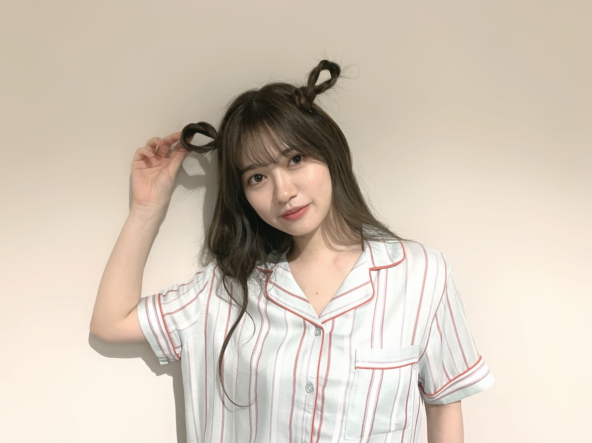
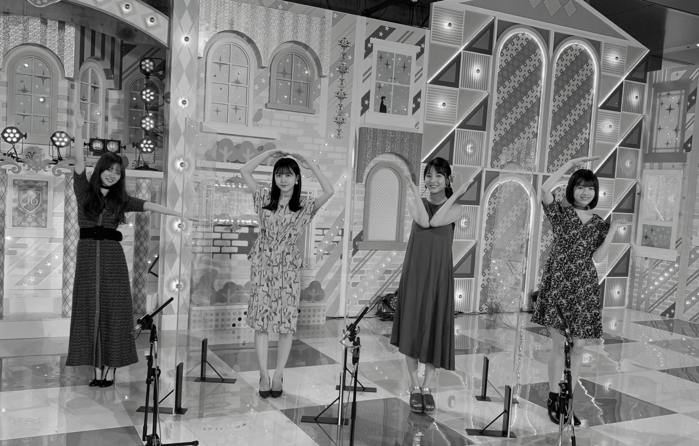
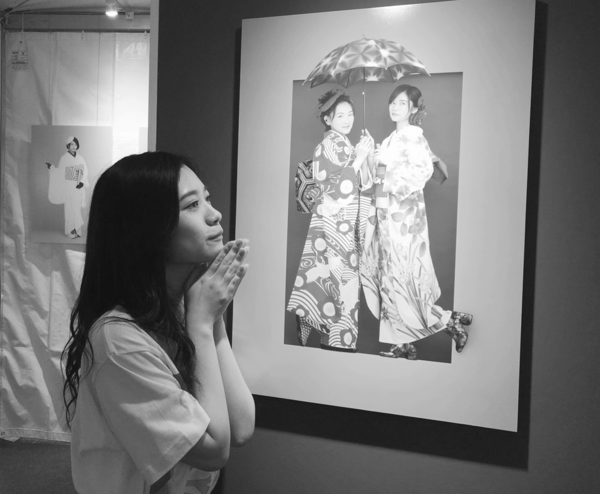
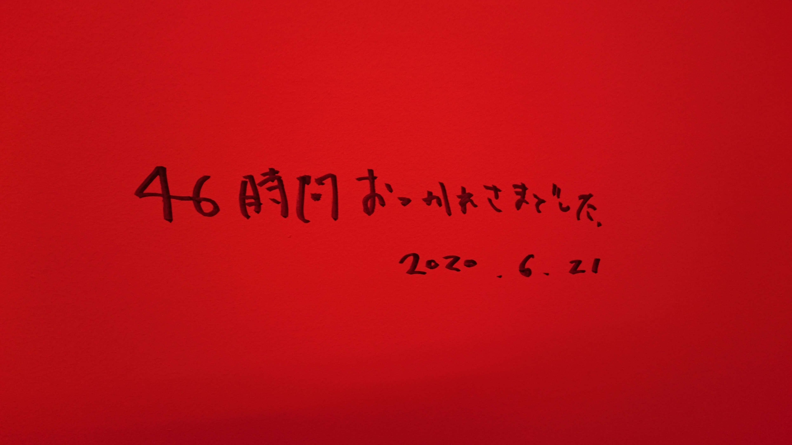

2020/0625ThuTHIS IS IT
パジャマー。☺️
楽しんでるよって言うのを身体から髪型から出していこうって

楽しんでもらえてたなら何よりです。
私自身
今回テーマとして
先輩とは思い出を後輩には手を差し伸べられるようにと言ったので
電視台含めてそのような企画を作れたこと
それを披露できる場所があることを嬉しく思います。
初めから参加させてもらってる
2期生として
沢山の方に見てもらえる場所が
すぐにある事の有り難さは凄く感じています。
私の電視台2020年はいかがでしたか。☺️
本当に私物のみだったので
骨格から似合いそうな子を選ばせて貰いました。
それと、何となく似たものを感じるかも、、、なんて思ったり。
綺麗に着こなしてくれると期待してたけど想像よりもいいものが出来ました。
私も満足満足満足でしたし
メンバーからも好評で嬉しかった。☺️
あの、みんなが皆を褒め合える乃木坂46が好きだから、嬉しかった。
何日も前から準備していたから
その見えない時間も込みで
とても、いい経験になりました。
みんなありがとう。
とても楽しかったし私はずっとファッション関係で働きたかったので
自分で何日も前からコーデの準備
とても学ぶことがありました。
フィッティングするとか
アクセサリーまで自分で考えたり
その子に合うものを考えながらも
新しい一面を引き出したいから
私になりに考えたりと。
今の私にはここまでの事が出来るのかと普段の活動では知れない自分を知ることが出来ました。
今はアイドルやらせてもらってますが、枠にはまらずに
電視台という企画を通して
メンバーに沢山の可能性や才能を個性を発見できる素敵な場所だと46時間TVを通して感じました。
これを機にファッションについて
趣味だけに止めずに
お仕事として私は向き合いたいです。
皆様お力添え宜しくお願い致します。

2020
皆でlove
これからも宜しくねー。☺️

昔の46時間TV
大好きな先輩。☺️
昨日は、うたプリ10周年記念日でした。
私が初めて好きになったアニメです。
一十木音也くんに出逢って10年。
時の流れは恐ろしいものです。
オーディションの頃から
私の支えでした。
そして、今日は
ずっと尊敬
言葉では表せない人に向けたものです。
表現者としてステージに立つ人として全てがスマートで夢がある人。
人として深みがあって
幼いながらに魅力を感じで
今でもずっとずっと私に良いインスピレーションをくれる人です。
歌って凄いなって
目に見えない存在になっても
沢山の人の心を動かし続けている人。
私も目に見えない存在になっても
そんな人でありたいです。
誰かの心の中で生きていたいです。
とりあえず、最近はふとした瞬間も
なにか映画を見てても
誰かの発言を聞いても
私は今までの出来事や出逢いが
大切な宝物だと感じます。
言葉にすると伝わりきらないし
言葉の捉え方によっては
全く反対の意味をもたらすこともある
だからこそ、好きというより
大切が合う気がします。
46時間本当にお疲れ様でした。

2020/06/25 17:48
コメント(674)
ブログ更新ありがとう〜
46時間TVおつかれ様です‼︎
すっごく良かった‼︎
電視台も二期生企画も♡
コーディネートするのほんとにうまいなぁおしゃれだなぁ、、、
と思いました
46時間TVおつかれ様です‼︎
すっごく良かった‼︎
電視台も二期生企画も♡
コーディネートするのほんとにうまいなぁおしゃれだなぁ、、、
と思いました
蘭世ちゃん、46時間TV、おつかれさまでした！乃木坂制服も、私服姿も、おしゃれに着る蘭世ちゃん、スタイル良くて、僕に癒しと活力を与えて、いただきました。ありがとう。
ブログ更新ありがとう！！！
ゆっくりとまたコメントします◎
46時間TV本当にお疲れ様でした！！！
大好きよ〜〜
ゆっくりとまたコメントします◎
46時間TV本当にお疲れ様でした！！！
大好きよ〜〜
ブログ更新ありがとう。
2020年下半期も貴方にファッションの仕事が来るようにファンとしてたくさん寺田蘭世さんの可能性を拡散していきたいと思います。
46時間TVお疲れさまでした。
2020年下半期も貴方にファッションの仕事が来るようにファンとしてたくさん寺田蘭世さんの可能性を拡散していきたいと思います。
46時間TVお疲れさまでした。
ブログ更新ありがとう！
今回の46時間テレビは丸々見るわけじゃなくて
電視台と修学旅行を見ました。
電視台の企画は、登場したメンバーもそうだし、
そのメンバーのファンにとっても良い企画だったなと思います。
その心の余裕を見習いたいです。
今回の46時間テレビは丸々見るわけじゃなくて
電視台と修学旅行を見ました。
電視台の企画は、登場したメンバーもそうだし、
そのメンバーのファンにとっても良い企画だったなと思います。
その心の余裕を見習いたいです。
ブログ更新ありがとう！
46時間TVお疲れ様でした！そしてありがとうございました！4回目の企画でしたが、やっぱり振り返るとあっという間で、終わった時のなんとも言えない喪失感というものが、どれだけ充実した時間を送ったのか気付かされます！本当に幸せな46時間でした！
ひとつひとつ感想を書くとものすごい量になるので、蘭世さんの電視台について書きますね。今回の電視台は他の人のファッションをコーディネートするということでしたが、前回からさらにパワーアップして、視聴者としては蘭世さんのこだわりや個性がとても伝わりました！これからもファッション関係のお仕事が増えて蘭世さんが活躍できることを願ってます！
そして、2期生企画ではもっともっとみていたかったというのが素直な感想ですが、2期生のハイテンションな姿、とても元気になれました！
自分は、大学生でしばらくずっと家で授業を受け人ともあまり会わずに生活してきたので、この放送で、はなれていても仲間がいるような気がして、本当に元気をもらいました！僕以上に多くの人にたくさんのパワーが伝わったと思います！乃木坂はほんとに最高のグループです。これからも応援していきますし、蘭世さんのことを最後まで支え合って行けたらと思っております！
早く次の楽しみを作らねば、、、笑
蘭世さん本当にありがとうございました！そしてお疲れ様でした！
蘭世さん大好きぴです！
46時間TVお疲れ様でした！そしてありがとうございました！4回目の企画でしたが、やっぱり振り返るとあっという間で、終わった時のなんとも言えない喪失感というものが、どれだけ充実した時間を送ったのか気付かされます！本当に幸せな46時間でした！
ひとつひとつ感想を書くとものすごい量になるので、蘭世さんの電視台について書きますね。今回の電視台は他の人のファッションをコーディネートするということでしたが、前回からさらにパワーアップして、視聴者としては蘭世さんのこだわりや個性がとても伝わりました！これからもファッション関係のお仕事が増えて蘭世さんが活躍できることを願ってます！
そして、2期生企画ではもっともっとみていたかったというのが素直な感想ですが、2期生のハイテンションな姿、とても元気になれました！
自分は、大学生でしばらくずっと家で授業を受け人ともあまり会わずに生活してきたので、この放送で、はなれていても仲間がいるような気がして、本当に元気をもらいました！僕以上に多くの人にたくさんのパワーが伝わったと思います！乃木坂はほんとに最高のグループです。これからも応援していきますし、蘭世さんのことを最後まで支え合って行けたらと思っております！
早く次の楽しみを作らねば、、、笑
蘭世さん本当にありがとうございました！そしてお疲れ様でした！
蘭世さん大好きぴです！
ブログ更新ありがとう！
髪型可愛すぎです！テンション0-100もめっちゃ可愛かったよ〜笑
しっかり楽しめました！
林 ちゃんとのツーショットトークもお姉さんらしく話とか進めててやっぱり尊敬しました
電視台すごく良かったよ！
前の46時間TVの時は、乃木坂46にハマっていなくて前のがどんな感じだったかは分からなけれど、みんな凄く似合ってたしファッションセンス流石です！
電視台を見ていて、蘭世だけでなく全員の個々の強みだったり個性が見れたから色々なお仕事が増えると良いね。
2020年も、もう半年が経とうとしてる…
僕も、人生の起点が色々あって
その時に支えになった物、人の存在は忘れられません
本当に歌って凄いと46時間TVを見て改めて感じました。
もちろん、蘭世も僕のこれからの人生の支えになってもらいます…。
1分1秒、一瞬 その時にしか起きない、もう二度と同じ事は起きないから大切にして行きたいね
本当に46時間お疲れ様！
素晴らしいグループ、人に出会えて良かった。心の底から思います。
大好きです
そうや
髪型可愛すぎです！テンション0-100もめっちゃ可愛かったよ〜笑
しっかり楽しめました！
林 ちゃんとのツーショットトークもお姉さんらしく話とか進めててやっぱり尊敬しました
電視台すごく良かったよ！
前の46時間TVの時は、乃木坂46にハマっていなくて前のがどんな感じだったかは分からなけれど、みんな凄く似合ってたしファッションセンス流石です！
電視台を見ていて、蘭世だけでなく全員の個々の強みだったり個性が見れたから色々なお仕事が増えると良いね。
2020年も、もう半年が経とうとしてる…
僕も、人生の起点が色々あって
その時に支えになった物、人の存在は忘れられません
本当に歌って凄いと46時間TVを見て改めて感じました。
もちろん、蘭世も僕のこれからの人生の支えになってもらいます…。
1分1秒、一瞬 その時にしか起きない、もう二度と同じ事は起きないから大切にして行きたいね
本当に46時間お疲れ様！
素晴らしいグループ、人に出会えて良かった。心の底から思います。
大好きです
そうや
ブログ更新ありがとう。
そして、46時間TVお疲れ様でした！
蘭世が出てたシーンは全部見たはず！笑
るなぴ（あ、林か笑）は言葉のチョイスがよくて、気になってたので2ショットトークやっててなぜだか嬉しくなりました
電視台は蘭世らしくてとてもよかったです！メンバーごとに雰囲気が違くて、でもみんな似合っててやっぱり蘭世はおしゃれさんですね
2期生企画も乃木雀もよかったです！！
アナスターシャは本当に大好きな曲で、涙が出ました
ずっと見てたから早く会いたくなりました
46時間TVの思い出話あったら聞きたいです！
誰かを想えること、誰かを心から尊敬できることは素敵な人にしかできないことだと思います。蘭世さんがそう思ってもらえる人になってくれたら自分も嬉しいです
そして、46時間TVお疲れ様でした！
蘭世が出てたシーンは全部見たはず！笑
るなぴ（あ、林か笑）は言葉のチョイスがよくて、気になってたので2ショットトークやっててなぜだか嬉しくなりました
電視台は蘭世らしくてとてもよかったです！メンバーごとに雰囲気が違くて、でもみんな似合っててやっぱり蘭世はおしゃれさんですね
2期生企画も乃木雀もよかったです！！
アナスターシャは本当に大好きな曲で、涙が出ました
ずっと見てたから早く会いたくなりました
46時間TVの思い出話あったら聞きたいです！
誰かを想えること、誰かを心から尊敬できることは素敵な人にしかできないことだと思います。蘭世さんがそう思ってもらえる人になってくれたら自分も嬉しいです
46時間TV、三日間お疲れさまでした。
初日から蘭世が沢山映ってて嬉しかったです。先輩してる姿も沢山観れました！モバメで言ってたハッシュタグ、トレンド入りしてましたよ！蘭世ちゃんファンを甘やかしてください！！！笑
かけがえのない大切な時間を有難うございました。
初日から蘭世が沢山映ってて嬉しかったです。先輩してる姿も沢山観れました！モバメで言ってたハッシュタグ、トレンド入りしてましたよ！蘭世ちゃんファンを甘やかしてください！！！笑
かけがえのない大切な時間を有難うございました。
やぁ(｡･ω･)ﾉﾞ最愛なる蘭世
ブログ更新ありがとう！
パジャマ姿が！！！
目…目がぁ～
眩しすぎる存在を確認したぁ！！！！！
この髪型可愛いよなちょい奇抜ではあるけど、可愛い！
今回は初めに言うてた通り後輩にチャンスというか光を与える感じやったね。
そうやな。
沢山の方に見てもらえる場所って初めは無いもんだけど、一期生が頑張って築いた場所がありその後に二期生、三期生、四期生が築いてきたって感じだもんな。
有難い事や。
電視台は前にも感想書いたけどホンマ良かった！！
それぞれの個性を引き立たせてたと思う
やっぱ最高のオシャレさんやなって思った
そこまでの経緯も自分の経験にもなるもんな時間をかけて作り上げたものだったら尚更想いもこもってる
蘭世
趣味から仕事になる事は沢山ある！
ようはそれがどれだけ好きかって事だと思う
だから蘭世
2020年こちらこそよろしくな！
生駒さんとのツーショットも良いな
うたプリは全然わからんわ
蘭世
二次元にも嫉妬しそう( ´艸｀)笑
ずっと誰かの心の中にいるってすごい事だよな…
人は忘れる生き物でもそのなかでもずっとあり続けるのが凄い。
蘭世
でも俺の心には最後まで行き続けるよ。
それだけ俺の中で蘭世
ふとした時にもそういう風に大切な宝物と思える心を持ち続けるのは大事だよな。
想いを言葉にし言葉を伝えるのはすごく難しい。
伝わっても100％じゃない時もあるだろうし、蘭世
好きというより大切…わかる気がする。
その気持ち大事にしたいな。
46時間お疲れ様！
きっとままた後で(｡･ω･)
乃木坂46時間TV、
お疲れ様でした。
２期生企画、楽しかった。
こんな時だからこそ、乃木坂46の存在がありがたかった。
お疲れ様でした。
２期生企画、楽しかった。
こんな時だからこそ、乃木坂46の存在がありがたかった。
蘭世ちゃん、こんばんは
パジャマと髪型、凄く可愛いね
電視台も楽しく見させてもらいました
ニョロニョロ君も巻き付いてたね
4人でつくるＬＯＶＥが可愛いね
蘭世ちゃん、史緒里ちゃん、せーらちゃん、るなちゃんの４人の笑顔も素敵
いこまちゃんとのモノトーンの写真も凄くセンスがいいね
歌の力は凄いと思うよ
勇気付けられたり背中を押されたり、ウキウキしたり、感情を揺さぶられるし、自生経験からダイレクトに感動に繋がるものもあります
蘭世ちゃんも色んな人に響く歌を歌ってるアーティストだと思うし、歌ってる声やダンスで明るく楽しい気持ちになってるよ
いつもありがとう
これからも応援してるので、頑張ってね
しゃぁ、またね
パジャマと髪型、凄く可愛いね
電視台も楽しく見させてもらいました
ニョロニョロ君も巻き付いてたね
4人でつくるＬＯＶＥが可愛いね
蘭世ちゃん、史緒里ちゃん、せーらちゃん、るなちゃんの４人の笑顔も素敵
いこまちゃんとのモノトーンの写真も凄くセンスがいいね
歌の力は凄いと思うよ
勇気付けられたり背中を押されたり、ウキウキしたり、感情を揺さぶられるし、自生経験からダイレクトに感動に繋がるものもあります
蘭世ちゃんも色んな人に響く歌を歌ってるアーティストだと思うし、歌ってる声やダンスで明るく楽しい気持ちになってるよ
いつもありがとう
これからも応援してるので、頑張ってね
しゃぁ、またね
蘭世ブログ更新ありがとう！電視台しっかり見たよー！でてきた3人ともすごく可愛かったー
会える日楽しみにしてます！
会える日楽しみにしてます！
46時間TVお疲れ様ー
電視台良かった！
やっぱりおしゃれでセンスあるんだなぁって思った！
2期生企画おもしろくて、2期生やっぱり好きだと思ったー
電視台良かった！
やっぱりおしゃれでセンスあるんだなぁって思った！
2期生企画おもしろくて、2期生やっぱり好きだと思ったー
お疲れ様です。
46時間TVほんとうにお疲れ様でした！
のぎ天企画以来、ずっと蘭世ちゃんが乃木坂メンバーのコーディネートを観たかったので今回の電視台は夢が叶いました。ありがとー:-)
大変な環境の中で乃木坂ちゃん、企画に尽力下さったスタッフさん、関係者さん、そして蘭世ちゃんへ感謝感謝です。素敵な時間と思い出をありがとう。
蘭世ちゃんが大好きです。またね:-)
46時間TVほんとうにお疲れ様でした！
のぎ天企画以来、ずっと蘭世ちゃんが乃木坂メンバーのコーディネートを観たかったので今回の電視台は夢が叶いました。ありがとー:-)
大変な環境の中で乃木坂ちゃん、企画に尽力下さったスタッフさん、関係者さん、そして蘭世ちゃんへ感謝感謝です。素敵な時間と思い出をありがとう。
蘭世ちゃんが大好きです。またね:-)
ブログ更新ありがとう！
そして、46時間ほんとにおつかれさま
乃木坂メンバーをはじめ、こうして楽しみを届けてくれるみなさんにほんとに感謝です
電視台みたよー！
もうほんとにほんとに最高だった！
やっぱ蘭世のセンス抜群にいいし、気取ってない？って言い方は違うかもしれないけど蘭世自身のよさがすごく出た企画でもう最高すぎて、友達にもこれだけみてくれ！って勧めまくってる
友達もすごくいいって言ってくれてるよー
それだけじゃなくて、後輩のよさ、乃木坂のよさを引き出してて46時間ならではだし、蘭世ならではのよさを引き出せててとっても素敵な企画でした！
個人的には久保ちゃんのふたつめの衣装がいちばんハマった！いや、どれも素敵すぎて選べないんだけども！
もちろん、蘭世の服もとってもお似合いでした！
画像の髪型もめちゃくちゃかわいくて、もう大好きです。地獄のフリでテンション0100ゲームみたいなのやらされたのもめちゃくちゃ笑った
なにせ46時間もあったから感想は尽きないんだけども、文字にしたら褪せるような気もするんだけども、この思い出は褪せないし、もちろん蘭世への思いはより一層強くなりました。
こうして蘭世が蘭世らしく活動できているのをみていると、すごくうれしいし、励みになります
大好きな蘭世がファッションの仕事できるように、もちろんおれの力だけでは到底無理だけど、なにか広めたり、良さを伝えることで繋がってけばな、なんて思ってます
蘭世をはじめとした乃木坂にたくさん楽しみをもらいました。
ほんとにいつも受け取ってばかりで申し訳なくなるくらいです。でも！おれもその分胸を張れるよう自分らしくこれから楽しめるように生きていくね
マイケルにはなれないけど、だれかにいいなっておもってもらえるように！
ほんとにほんとにいつもありがとう！
ずっと大好きです
46時間おつかれさま。
梅雨らしくなってきたので体調に崩さないようにね
愛してんで！
そして、46時間ほんとにおつかれさま
乃木坂メンバーをはじめ、こうして楽しみを届けてくれるみなさんにほんとに感謝です
電視台みたよー！
もうほんとにほんとに最高だった！
やっぱ蘭世のセンス抜群にいいし、気取ってない？って言い方は違うかもしれないけど蘭世自身のよさがすごく出た企画でもう最高すぎて、友達にもこれだけみてくれ！って勧めまくってる
友達もすごくいいって言ってくれてるよー
それだけじゃなくて、後輩のよさ、乃木坂のよさを引き出してて46時間ならではだし、蘭世ならではのよさを引き出せててとっても素敵な企画でした！
個人的には久保ちゃんのふたつめの衣装がいちばんハマった！いや、どれも素敵すぎて選べないんだけども！
もちろん、蘭世の服もとってもお似合いでした！
画像の髪型もめちゃくちゃかわいくて、もう大好きです。地獄のフリでテンション0100ゲームみたいなのやらされたのもめちゃくちゃ笑った
なにせ46時間もあったから感想は尽きないんだけども、文字にしたら褪せるような気もするんだけども、この思い出は褪せないし、もちろん蘭世への思いはより一層強くなりました。
こうして蘭世が蘭世らしく活動できているのをみていると、すごくうれしいし、励みになります
大好きな蘭世がファッションの仕事できるように、もちろんおれの力だけでは到底無理だけど、なにか広めたり、良さを伝えることで繋がってけばな、なんて思ってます
蘭世をはじめとした乃木坂にたくさん楽しみをもらいました。
ほんとにいつも受け取ってばかりで申し訳なくなるくらいです。でも！おれもその分胸を張れるよう自分らしくこれから楽しめるように生きていくね
マイケルにはなれないけど、だれかにいいなっておもってもらえるように！
ほんとにほんとにいつもありがとう！
ずっと大好きです
46時間おつかれさま。
梅雨らしくなってきたので体調に崩さないようにね
愛してんで！
46時間、ご苦労様でした！いろんな企画で楽しませていただきました！心から乃木坂や蘭ちゃんに感謝の気持ちでいっぱいだよーッ(≧∇≦)パジャマ&ドーナツ？見た瞬間、ニヤけてしまったーッ(≧∇≦)電視台も蘭ちゃんの服も大人っぽくて凄く素敵だったし、みんなのファッションもほんとによく似合うと思ったよ！やっぱり蘭ちゃんのセンスが抜群なんだなぁ〜とも思った電視台でした！でも、握手会で、パイソンくん、やめてね(^o^)そして、いろんな方々のメッセージ、医療関係者の方の隣人よを聴いて元気をもらったというメッセージもあったけど、いつ自分が感染するかもわからない状況で一生懸命働いて、過酷な現場で働いて、ほんとに大変だよね。そういう方々にも乃木坂の歌も励みになってると改めて思った！これからもね、日本に元気と希望を与えていってあげてね(^o^)乃木坂ファンにもなれたこと、あたしの誇りです(≧∇≦)
ブログ更新ありがとう！46時間TVお疲れ様！
自分たちの力は微々たるものだけど、蘭世のファッションめちゃくちゃ好きだし、応援し続けます！
蛇とのコラボも良かったよ！
自分たちの力は微々たるものだけど、蘭世のファッションめちゃくちゃ好きだし、応援し続けます！
蛇とのコラボも良かったよ！
蘭世ちゃん、ブログ更新ありがとう！
46時間TV最高だった！
蘭世ちゃんの髪型めっちゃ可愛いよ！
2期生の期別企画や電視台神回すぎた！
本当に46時間お疲れ様でした！
またね！
46時間TV最高だった！
蘭世ちゃんの髪型めっちゃ可愛いよ！
2期生の期別企画や電視台神回すぎた！
本当に46時間お疲れ様でした！
またね！
蘭世ちゃんブログ更新ありがとう。支えになっています。蘭世ちゃんのスキンケアと体重維持の方法を教えてください
電子台みたよ！！
俺は久保ちゃん？が着てた上が黒で下が赤いのが１番好きだったよ！
でも、蘭世が１番綺麗だったよ！！
俺は久保ちゃん？が着てた上が黒で下が赤いのが１番好きだったよ！
でも、蘭世が１番綺麗だったよ！！
らんぜ＼(^o^)／お疲れさまでした
らんぜのパジャマ姿を見れて凄くありがたいよ(｡>﹏<｡)♡♡♡
この髪型はどうやったの？(ﾟдﾟ)！でも凄くらんぜらしいなあ(｡>﹏<｡)可愛い
46時間TVお疲れさまでした
そして、電視台は本当に本当に良かったよ
人、皆は自分の好みがあるはずなのに、なんで蘭世がコーディネートするものは全部自分の好みとどストライクするかな？
コーデだけではなくて、ちゃんとメンバーの誰に似合うまで考えて本当にプロ意識高いと思うよ(｡>﹏<｡)
特に新4期生るなぴっぴー（林瑠奈）の1着目のピンク黒のコーデに驚いた。
まだ加入したばかりのに、もうこの子にぴったりのファッションが分かって
本当にチョーカーや黒服はるなぴーのキレイな黒いボブに似合うよな(｡>﹏<｡)♡♡♡
いや、本当に蘭世プロデュースのファッションショー定期的にやってほしいなあ(｡>﹏<｡)
そして、必ずお仕事の方も来ると信じるよ＼(^o^)／
応援する(/･ω･)/
もう本当に本当にらんぜのセンスに尊敬するよ(｡>﹏<｡)
そして人間としても凄く尊敬するよ(｡>﹏<｡)
自分はそう思わない時もあるけど、三者から見たら本当に憧れです
これからも頑張って(/･ω･)/
好きだよ～(*´ω｀*)♡
らんぜのパジャマ姿を見れて凄くありがたいよ(｡>﹏<｡)♡♡♡
この髪型はどうやったの？(ﾟдﾟ)！でも凄くらんぜらしいなあ(｡>﹏<｡)可愛い
46時間TVお疲れさまでした
そして、電視台は本当に本当に良かったよ
人、皆は自分の好みがあるはずなのに、なんで蘭世がコーディネートするものは全部自分の好みとどストライクするかな？
コーデだけではなくて、ちゃんとメンバーの誰に似合うまで考えて本当にプロ意識高いと思うよ(｡>﹏<｡)
特に新4期生るなぴっぴー（林瑠奈）の1着目のピンク黒のコーデに驚いた。
まだ加入したばかりのに、もうこの子にぴったりのファッションが分かって
本当にチョーカーや黒服はるなぴーのキレイな黒いボブに似合うよな(｡>﹏<｡)♡♡♡
いや、本当に蘭世プロデュースのファッションショー定期的にやってほしいなあ(｡>﹏<｡)
そして、必ずお仕事の方も来ると信じるよ＼(^o^)／
応援する(/･ω･)/
もう本当に本当にらんぜのセンスに尊敬するよ(｡>﹏<｡)
そして人間としても凄く尊敬するよ(｡>﹏<｡)
自分はそう思わない時もあるけど、三者から見たら本当に憧れです
これからも頑張って(/･ω･)/
好きだよ～(*´ω｀*)♡
46時間テレビ、ずっと蘭世の姿を探していました。
僕にとっては蘭世が心の支えになってるしモチベーションでもあります。少しでも恩返しできるようにこれからも応援します！
僕にとっては蘭世が心の支えになってるしモチベーションでもあります。少しでも恩返しできるようにこれからも応援します！
蘭ちゃんブログ更新有り難うございます。蘭ちゃんはファッション関連のお仕事がしたいのですね。心の中を書いてくれて有り難うございます。頑張って下さいね。よき人生になってほしいと思っております。蘭ちゃんの人生を応援しております。
らんらんこんばんは( ￣▽￣)ﾉｼブログ更新ありがとう♪
改めて４６時間TVお疲れさまでした。
電視台とかの感想は前回のブログコメで書かせてもらったので割愛します。
前に書き忘れてて他の方が書かれたかもですが、２期生企画でお見立て会映像出てらんらんの話題出た後にTwitterでUTBさんが当時のらんらんのお写真とともにハッシュタグらんらんで上げてくれてました。
マイケルいいですよねー。
老若男女知らない人はいない。
まさしく時代を駆け抜けたアーティストでしたね。
改めて４６時間TVお疲れさまでした。
電視台とかの感想は前回のブログコメで書かせてもらったので割愛します。
前に書き忘れてて他の方が書かれたかもですが、２期生企画でお見立て会映像出てらんらんの話題出た後にTwitterでUTBさんが当時のらんらんのお写真とともにハッシュタグらんらんで上げてくれてました。
マイケルいいですよねー。
老若男女知らない人はいない。
まさしく時代を駆け抜けたアーティストでしたね。
コロナ早く終息してほしいですね、そしたら是非握手会など行きたいです
一日一日を僕も頑張って生きていきたいと思います。
一日一日を僕も頑張って生きていきたいと思います。
ブログありがと！
電視台楽しみにしてたから
成功して嬉しい！
全部私服なんだなー、って思うと
やっぱりオシャレ
3人の違った魅力を発掘できてた◎
そして蘭世ちゃんの
新たな魅力もたくさん見つけられた
最高の46時間だった！
2期生企画も電視台もなんども観返したよー！
そして早く会いたいね。
THIS IS IT。
今日でもう11年かー
悲しみと驚きだったけど、
ライブ映像とか観ても
やっぱ輝きは変わらないね。
スーパースターMJのように
これからも輝き続けておくれ！
一緒にね
電視台楽しみにしてたから
成功して嬉しい！
全部私服なんだなー、って思うと
やっぱりオシャレ
3人の違った魅力を発掘できてた◎
そして蘭世ちゃんの
新たな魅力もたくさん見つけられた
最高の46時間だった！
2期生企画も電視台もなんども観返したよー！
そして早く会いたいね。
THIS IS IT。
今日でもう11年かー
悲しみと驚きだったけど、
ライブ映像とか観ても
やっぱ輝きは変わらないね。
スーパースターMJのように
これからも輝き続けておくれ！
一緒にね
ブログの更新ありがとう☺︎
46時間TVお疲れ様でした！
みんな着こなしてたね！
らんらんのチョイスも良かったね！
今後のブログも楽しみに待ってます！
体調には気をつけてね！
応援してます！
大好きです♡
やっぱり「らんらん」がいいのかな？（笑）
これから「らんらん」って呼ぼうかな！
らんらん大好き♡
ホントにお疲れ様！
しっかり体を休めてね！
そして、ありがとう♡
46時間TVお疲れ様でした！
みんな着こなしてたね！
らんらんのチョイスも良かったね！
今後のブログも楽しみに待ってます！
体調には気をつけてね！
応援してます！
大好きです♡
やっぱり「らんらん」がいいのかな？（笑）
これから「らんらん」って呼ぼうかな！
らんらん大好き♡
ホントにお疲れ様！
しっかり体を休めてね！
そして、ありがとう♡
ブログ更新ありがとう！
46時間TVお疲れ様でした！
たくさん楽しませてもらったよ！
蘭世にファッションの仕事きたらいいね。
乃木坂がやっぱり好きなんだなぁって感じた46時間でした。
全力で頑張る蘭世を全力で応援するよ！
46時間TVお疲れ様でした！
たくさん楽しませてもらったよ！
蘭世にファッションの仕事きたらいいね。
乃木坂がやっぱり好きなんだなぁって感じた46時間でした。
全力で頑張る蘭世を全力で応援するよ！
蘭世さんブログ更新ありがとう。
蘭世さんが電視台で作る世界がとても素敵でした。久保ちゃん、聖来ちゃん、林ちゃん、それぞれの今まで知らなかった魅力を引き出してくれて蘭世さんの凄さを感じました。
もちろん、蛇を絡めてただでは終わらせない所も！
これからもファッションを通じて蘭世さんの魅力を発信していってください。乃木坂46の枠を超えた蘭世さんの活躍も楽しみです。
蘭世さんが電視台で作る世界がとても素敵でした。久保ちゃん、聖来ちゃん、林ちゃん、それぞれの今まで知らなかった魅力を引き出してくれて蘭世さんの凄さを感じました。
もちろん、蛇を絡めてただでは終わらせない所も！
これからもファッションを通じて蘭世さんの魅力を発信していってください。乃木坂46の枠を超えた蘭世さんの活躍も楽しみです。
蘭世、こんばんは
反乱軍のスパイとしてファーストオーダーに
追われながら、応援している
まさとです
46時間テレビご苦労様でした
電視台最高でしたよ
さすがまりかの跡を継ぐお洒落番長
見事にメンバーのコーディネート
していましたね
それに4期生の引き立てすばらしいです
蘭世は本当によき人ですね
早く握手会が再開しないかな
今回は久しぶりに(すいません(๑˃̵ᴗ˂̵))
たくさん応援できますので
ではまたね
いつもモバメありがとう
バイバイ
反乱軍のスパイとしてファーストオーダーに
追われながら、応援している
まさとです
46時間テレビご苦労様でした
電視台最高でしたよ
さすがまりかの跡を継ぐお洒落番長
見事にメンバーのコーディネート
していましたね
それに4期生の引き立てすばらしいです
蘭世は本当によき人ですね
早く握手会が再開しないかな
今回は久しぶりに(すいません(๑˃̵ᴗ˂̵))
たくさん応援できますので
ではまたね
いつもモバメありがとう
バイバイ
46時間テレビお疲れ様、とても楽しかった！
蘭世ちゃんブログ更新ありがとう♡
パジャマ可愛すぎる、、
蘭世ちゃんの好きが詰まった電視台！楽しかったよ☺️
私もうたプリ好き！推しは来栖翔くん
会える日を楽しみにしてます 沢山お話出来たらいいなぁ
パジャマ可愛すぎる、、
蘭世ちゃんの好きが詰まった電視台！楽しかったよ☺️
私もうたプリ好き！推しは来栖翔くん
会える日を楽しみにしてます 沢山お話出来たらいいなぁ
らんぜ、ブログ更新ありがとう
すぎちゃんです。
まずは、46時間テレビお疲れ様でした。
サブタイトルにもあるように、
こんなときでもだからそこ
らんぜたち乃木坂46メンバーとファン
繋がりを感じられるそんなかけがえのない時間だった感じがします。
電視台もお疲れ様。
らんぜ節、めちゃくちゃ感じました。
後輩との絡みも蛇の絡みつきも面白かったです（笑）
また、モバメ、ブログの更新楽しみに待ってます。
すぎちゃん。
すぎちゃんです。
まずは、46時間テレビお疲れ様でした。
サブタイトルにもあるように、
こんなときでもだからそこ
らんぜたち乃木坂46メンバーとファン
繋がりを感じられるそんなかけがえのない時間だった感じがします。
電視台もお疲れ様。
らんぜ節、めちゃくちゃ感じました。
後輩との絡みも蛇の絡みつきも面白かったです（笑）
また、モバメ、ブログの更新楽しみに待ってます。
すぎちゃん。
らんぜ、46時間テレビお疲れ様！
とても楽しい46時間です！
今回の電視台とても良かったよ、1番好きな服はくぼちゃんの1着目です、ファッションの凄さが感じる、服を変えるだけ違う人に見える。
くぼちゃんの2着目の服も好き、あれは蘭世風ファション全開です！
せーたんとくぼちゃんのブログで今回の服がらんぜからもらったって書いたよ、らんぜ素敵な先輩になった！
けど最後の蛇はちょっと苦手。笑
これの機に沢山ファション関連の仕事繋がると良いな！
最後のライブ特に「ハウス！」と「アナスターシャ」とても良かった！
大切って良い言葉です、俺も昔から今でもそしてこれからもらんぜと出会う事大切にします！
46時間テレビありがとう！
とても楽しい46時間です！
今回の電視台とても良かったよ、1番好きな服はくぼちゃんの1着目です、ファッションの凄さが感じる、服を変えるだけ違う人に見える。
くぼちゃんの2着目の服も好き、あれは蘭世風ファション全開です！
せーたんとくぼちゃんのブログで今回の服がらんぜからもらったって書いたよ、らんぜ素敵な先輩になった！
けど最後の蛇はちょっと苦手。笑
これの機に沢山ファション関連の仕事繋がると良いな！
最後のライブ特に「ハウス！」と「アナスターシャ」とても良かった！
大切って良い言葉です、俺も昔から今でもそしてこれからもらんぜと出会う事大切にします！
46時間テレビありがとう！
46時間お疲れ様でした！
電視台とても見ていて楽しかったです！ファッションには疎いですが、すごく興味が出ました。ヘビさんと蘭世さんのツーショット最高でした！
電視台とても見ていて楽しかったです！ファッションには疎いですが、すごく興味が出ました。ヘビさんと蘭世さんのツーショット最高でした！
46時間テレビお疲れ様でした！
電視台良かったです！2期生企画の蘭世すごい可愛いかったです！
これからも体調に気をつけて頑張ってください！
電視台良かったです！2期生企画の蘭世すごい可愛いかったです！
これからも体調に気をつけて頑張ってください！
お疲れ様でした！
電視台凄かったです！蘭世さんのセンスの良さよくしれる場所でした！
メンバー一人一人によくあった服装を選ばれていて凄いなーと思いました！あとパジャマの時の髪型凄く可愛いかったです！
これからも応援しています頑張ってください！
電視台凄かったです！蘭世さんのセンスの良さよくしれる場所でした！
メンバー一人一人によくあった服装を選ばれていて凄いなーと思いました！あとパジャマの時の髪型凄く可愛いかったです！
これからも応援しています頑張ってください！
ブログ更新おつかれさまです、そして46時間TVおつかれさまでした。
電視台での後輩メンバーへのコーディネート企画、とても楽しめました。今は林瑠奈ちゃんを応援してましてコーディネートをするメンバーに選んでいただけてお洒落な姿で歩く姿を見ることができてとても嬉しかったです。
2Sトークでも優しく引っ張ってくださったので楽しそうに話しをするるなぴの姿を見られました。本人も言ってましたが「はやし」のことをこれからもよろしくお願いします。
電視台での後輩メンバーへのコーディネート企画、とても楽しめました。今は林瑠奈ちゃんを応援してましてコーディネートをするメンバーに選んでいただけてお洒落な姿で歩く姿を見ることができてとても嬉しかったです。
2Sトークでも優しく引っ張ってくださったので楽しそうに話しをするるなぴの姿を見られました。本人も言ってましたが「はやし」のことをこれからもよろしくお願いします。
ブログ更新ありがとう!!
46時間見れるところは全部見たよ☺︎
蘭世の優しさ、強さ、可愛さとか色々感じられてとても幸せな3日間でした！
本当にお疲れ様でした。
お仕事も徐々に再開してると思うけど、体に気をつけて頑張ってね☺︎
いつもありがとう。
46時間見れるところは全部見たよ☺︎
蘭世の優しさ、強さ、可愛さとか色々感じられてとても幸せな3日間でした！
本当にお疲れ様でした。
お仕事も徐々に再開してると思うけど、体に気をつけて頑張ってね☺︎
いつもありがとう。
蘭世さんブログ更新ありがとうございます！
46時間テレビお疲れ様でした！蘭世さんがもともと個人の目標を掲げていたのを知っていたので蘭世さんの頑張りが伝わってきました！蘭世さんと一緒に楽しめました！
人のファッションを考えることは相手をよく知ること、自分の世界観と相手の世界観を上手く混ぜ合わせることが大事なのかなと思いました。何度も言いますが、蘭世さんには将来ブランドを作って欲しいなと思います。
二期生企画はまた見たいです！楽しみにしてますよらんらん！笑
蘭世さんはもう既に僕の心の中に生きていると思います。心の底から蘭世さんを尊敬しています。例え蘭世さんが乃木坂を卒業し、僕がヲタクを辞めても蘭世さんの言葉、姿は忘れません。伝わりきらなくても僕たちには言葉でしか伝えられないです。
蘭世さんは僕にとって大好きで、感謝しかなくて、大切な存在です。
またブログを楽しみに待ってます。
それでは！
46時間テレビお疲れ様でした！蘭世さんがもともと個人の目標を掲げていたのを知っていたので蘭世さんの頑張りが伝わってきました！蘭世さんと一緒に楽しめました！
人のファッションを考えることは相手をよく知ること、自分の世界観と相手の世界観を上手く混ぜ合わせることが大事なのかなと思いました。何度も言いますが、蘭世さんには将来ブランドを作って欲しいなと思います。
二期生企画はまた見たいです！楽しみにしてますよらんらん！笑
蘭世さんはもう既に僕の心の中に生きていると思います。心の底から蘭世さんを尊敬しています。例え蘭世さんが乃木坂を卒業し、僕がヲタクを辞めても蘭世さんの言葉、姿は忘れません。伝わりきらなくても僕たちには言葉でしか伝えられないです。
蘭世さんは僕にとって大好きで、感謝しかなくて、大切な存在です。
またブログを楽しみに待ってます。
それでは！
蘭世ちゃんブログ更新ありがとう!
46時間テレビお疲れ様!
改めて蘭世ちゃんのファッションセンスの良さを見ることができました
新たな形での46時間テレビだったけれどものすごい楽しかったし
蘭世ちゃんが見れる嬉しさはたまらんぜでした
まだ会える日は遠いと思うけど新たな形でまた蘭世ちゃんどの交流があれば良きですね!
ひょろひょろくんもお疲れ様!
46時間テレビお疲れ様!
改めて蘭世ちゃんのファッションセンスの良さを見ることができました
新たな形での46時間テレビだったけれどものすごい楽しかったし
蘭世ちゃんが見れる嬉しさはたまらんぜでした
まだ会える日は遠いと思うけど新たな形でまた蘭世ちゃんどの交流があれば良きですね!
ひょろひょろくんもお疲れ様!
46時間テレビお疲れ様！
これを通してまた蘭世の魅力を沢山みれたし、まだあまり知らなかった人も蘭世を見て惹かれるところが沢山あるような時間だったと思う！！
こういう時だから出来ることだし、今だから気づけた事がみんなそれぞれあったと思うんだ、
そのきっかけにもなってる気がして、
色々なことを考えながら、笑って感動して幸せな気分になった時間だった！
ほんとにありがとう！！
毎回映る度に髪型を変えてくれてたねー！
久しぶりに見た髪型や初めて見る髪型もあってすごい可愛かったー！
いつ映るかわかんなかったからもうずっと見てた笑
2期生企画めっちゃ面白かった笑
時間絶対足りなかったね笑
これが好評だったので、第2弾やります！ってならないかなーなって欲しいなー！
蘭世のブログのタイトル見て気づきました。
そっか今日だったんだね、もう11年にもなるんだね
こういうことも自分で意識してなかったり、人に教えてもらわないと、いつもの日常のように過ぎ去ってってしまうから、
蘭世がそうやって発信してくれたこと、凄いと思うし有難いです。
モバメもありがとう！46時間テレビやってる時も沢山送ってくれて嬉しかったー！同じ時間を共有してる感じですね
またコメントするねー！
りゅうやより
これを通してまた蘭世の魅力を沢山みれたし、まだあまり知らなかった人も蘭世を見て惹かれるところが沢山あるような時間だったと思う！！
こういう時だから出来ることだし、今だから気づけた事がみんなそれぞれあったと思うんだ、
そのきっかけにもなってる気がして、
色々なことを考えながら、笑って感動して幸せな気分になった時間だった！
ほんとにありがとう！！
毎回映る度に髪型を変えてくれてたねー！
久しぶりに見た髪型や初めて見る髪型もあってすごい可愛かったー！
いつ映るかわかんなかったからもうずっと見てた笑
2期生企画めっちゃ面白かった笑
時間絶対足りなかったね笑
これが好評だったので、第2弾やります！ってならないかなーなって欲しいなー！
蘭世のブログのタイトル見て気づきました。
そっか今日だったんだね、もう11年にもなるんだね
こういうことも自分で意識してなかったり、人に教えてもらわないと、いつもの日常のように過ぎ去ってってしまうから、
蘭世がそうやって発信してくれたこと、凄いと思うし有難いです。
モバメもありがとう！46時間テレビやってる時も沢山送ってくれて嬉しかったー！同じ時間を共有してる感じですね
またコメントするねー！
りゅうやより
ブログ更新ありがとう！
電視台、蘭世らしくてとても良かったと思います(^^)！
ヘビ出てきた時はめっちゃ笑いました！！
パジャマの画像、最高です、ありがとうございます！
まだまだ大変ですが、体調など気を付けて頑張りましょう(^^)！
電視台、蘭世らしくてとても良かったと思います(^^)！
ヘビ出てきた時はめっちゃ笑いました！！
パジャマの画像、最高です、ありがとうございます！
まだまだ大変ですが、体調など気を付けて頑張りましょう(^^)！
らんぜぴんブログ更新ありがとう！！
46時間TVお疲れ様〜！！蘭世ちゃんが出演したところは全部みれたはず！！笑
電視台とってもよかったよ〜！久保ちゃん、せいらちゃん、るなちゃんにとっても似合ってた、、！わたしはせいらちゃんが2回目に着てたブルーのシャツが1番好き！かな！蘭世ちゃんは本当にオシャレで絶対に自分では思いつかないようなファッションセンスで本当にすごいなぁといつも思ってます！！いつか蘭世ちゃんみたいなファッションがしてみたい、、、
ハーフアップだったり、写真みたいなお茶目な髪型だったり、ツインテールだったり、、、たくさんかわいい蘭世ちゃんが見られて本当によかったです！❤︎
前回の46時間TVのやつだ！！(;_;)前髪ない蘭世ちゃんもうすでに懐かしい、、そしてかわいい、、載せてくれてありがとう！
これからも体調には気をつけてね！☺︎
46時間TVお疲れ様〜！！蘭世ちゃんが出演したところは全部みれたはず！！笑
電視台とってもよかったよ〜！久保ちゃん、せいらちゃん、るなちゃんにとっても似合ってた、、！わたしはせいらちゃんが2回目に着てたブルーのシャツが1番好き！かな！蘭世ちゃんは本当にオシャレで絶対に自分では思いつかないようなファッションセンスで本当にすごいなぁといつも思ってます！！いつか蘭世ちゃんみたいなファッションがしてみたい、、、
ハーフアップだったり、写真みたいなお茶目な髪型だったり、ツインテールだったり、、、たくさんかわいい蘭世ちゃんが見られて本当によかったです！❤︎
前回の46時間TVのやつだ！！(;_;)前髪ない蘭世ちゃんもうすでに懐かしい、、そしてかわいい、、載せてくれてありがとう！
これからも体調には気をつけてね！☺︎
蘭世ちゃん、ブログ更新ありがとう！
電視台、見ました。
それぞれの子の雰囲気にマッチさせながら
新たな一面を開拓しているようで
ファッションの楽しい面を感じられたなと思います。
二期生企画も見てて懐かしい気持ちに
浸ることができました。ありがとう。
46時間ありがとう！お疲れ様でした！
電視台、見ました。
それぞれの子の雰囲気にマッチさせながら
新たな一面を開拓しているようで
ファッションの楽しい面を感じられたなと思います。
二期生企画も見てて懐かしい気持ちに
浸ることができました。ありがとう。
46時間ありがとう！お疲れ様でした！
香港人です。
蘭世ちゃんのモバメやブログいつもありがとう。
今回のブログも相変わらず可愛いの写真は載せてありがとうございます。
パジャマ可愛い！！！お茶目な髪色も可愛い！！！
熊の耳に似ている、まるでひょろひょろくん（笑）
46時間TVお疲れ様でした。
林瑠奈と二人トーク私も見ました。これからもっとなかよくなれたらいいですね。
蘭世コレクション2020も素晴らしいです。やっばり蘭世ちゃんのファッションセンス抜群です。いつか、ファッション関係の仕事をもらったらいいなぁ。モデルの仕事....
46時間TVの時間中、蘭世ちゃんは立派な先輩になりました、感じました。
いつでも私は優しい蘭世ちゃんの考え方とがやり方とが憧れる、尊敬する。
そして、大事な時先輩に思い出して蘭世ちゃん、私も大好き！！！
これからもよろしくお願いします。
次のモバメ、ブログ楽しみにしています。いつもありがとうございます。
蘭世ちゃんのモバメやブログいつもありがとう。
今回のブログも相変わらず可愛いの写真は載せてありがとうございます。
パジャマ可愛い！！！お茶目な髪色も可愛い！！！
熊の耳に似ている、まるでひょろひょろくん（笑）
46時間TVお疲れ様でした。
林瑠奈と二人トーク私も見ました。これからもっとなかよくなれたらいいですね。
蘭世コレクション2020も素晴らしいです。やっばり蘭世ちゃんのファッションセンス抜群です。いつか、ファッション関係の仕事をもらったらいいなぁ。モデルの仕事....
46時間TVの時間中、蘭世ちゃんは立派な先輩になりました、感じました。
いつでも私は優しい蘭世ちゃんの考え方とがやり方とが憧れる、尊敬する。
そして、大事な時先輩に思い出して蘭世ちゃん、私も大好き！！！
これからもよろしくお願いします。
次のモバメ、ブログ楽しみにしています。いつもありがとうございます。
ブログ更新ありがとう！
そして、46時間TVお疲れ様でした。
僕は学生という身で土日はどうしてもアルバイトで忙しいので、全て生で見ることはできませんでしたが、空いた時間を使ってすぐに見返しました！
自分が全力で応援している人が頑張っているのを見たり、心打たれる姿を見たりすると、自然と涙が出てきました。
電視台もそうですが、初っ端のツーショットトークは普段なかなか蘭世が後輩と話しているところを見れないのでとても新鮮でした！これを機に蘭世さん&はやしがいいコンビになったらいいですね！
7年一緒に活動されてる二期生の絡みはさすがの安定感ですね笑
面白かったし、イヤホンガンガンゲームの蘭世可愛かったなー
ますます、ライブや握手会に行きたくなりました。
なかなか状況は良くならないけれど、きっと報われる日は来るだろうから、その日をじっと待ち続けます！
本当にお疲れ様でした！
またコメントしますね〜
そして、46時間TVお疲れ様でした。
僕は学生という身で土日はどうしてもアルバイトで忙しいので、全て生で見ることはできませんでしたが、空いた時間を使ってすぐに見返しました！
自分が全力で応援している人が頑張っているのを見たり、心打たれる姿を見たりすると、自然と涙が出てきました。
電視台もそうですが、初っ端のツーショットトークは普段なかなか蘭世が後輩と話しているところを見れないのでとても新鮮でした！これを機に蘭世さん&はやしがいいコンビになったらいいですね！
7年一緒に活動されてる二期生の絡みはさすがの安定感ですね笑
面白かったし、イヤホンガンガンゲームの蘭世可愛かったなー
ますます、ライブや握手会に行きたくなりました。
なかなか状況は良くならないけれど、きっと報われる日は来るだろうから、その日をじっと待ち続けます！
本当にお疲れ様でした！
またコメントしますね〜
46時間TVお疲れ様。
電視台もメンバーそれぞれの個性が最大限に出てて素晴らしい企画だったな。
今回初めて46時間TVを見たけど、やっぱ乃木坂が好きだなと改めて思えました。
ガチで好きになったのはこの一年くらいだけど、それ以上に感じるくらい密な一年だった気がします。
これからもどんな形でも乃木坂を応援していく所存でございます。
よろしくお願いします！
感動をありがとう。
★とし★
電視台もメンバーそれぞれの個性が最大限に出てて素晴らしい企画だったな。
今回初めて46時間TVを見たけど、やっぱ乃木坂が好きだなと改めて思えました。
ガチで好きになったのはこの一年くらいだけど、それ以上に感じるくらい密な一年だった気がします。
これからもどんな形でも乃木坂を応援していく所存でございます。
よろしくお願いします！
感動をありがとう。
★とし★


最後にパイソン襟巻き見たかったナ